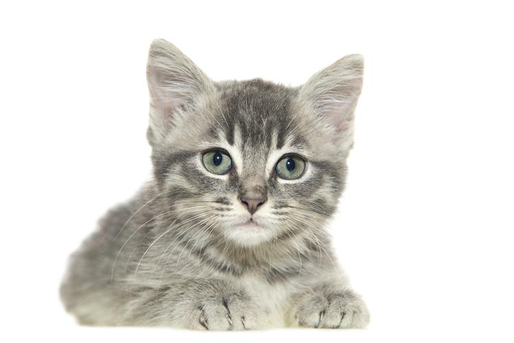

GRUPA 2
Wstęp do HTML
TO_DO: wprowadz kilka akapitow z krotkim opisem do czego służy HTML,
zrob wciecia dla kazdego akapitu i wyrownaj tekst do prawej/lewej/wycentruj i obu stron.
Lista numerowana
TO_DO: wprowadz przykładowe listy numerowane, uzyj roznych formatow numeracji.
Dodaj zagniezdzone listy.
Wypunktowanie
<<<<<<< HEAD
TO_DO: wprowadz przykładowe listy wypunktowane, uzyj roznych formatow wypunktowania.
Dodaj zagniezdzone listy.
=======
- Pierwszy podpunkt
- Drugi podpunkt
- Kolejne podpunktowania
- Zagniezdzenie pierwsze
- Podpunkt podpunktu
- Zagniezdzenie zagniezdzenia
>>>>>>> d681a82ae36dbbacb7b9e1fec95219f29d20f404
Tabela
| moja |
tabelka |
jest |
super |
| taka
| kolorowa
| bardzo
| jest
|
| wcale
| sie
| nie
| wlamalam
|
| polecam
| sie
| na
| przyszlosc
|
Obrazki
Kot domowy (Felis catus[1][2], również Felis silvestris catus lub Felis (silvestris) domesticus) – udomowiony gatunek ssaka z rzędu drapieżnych z rodziny kotowatych. Koty zostały udomowione około 9500 lat temu[3] i są obecnie najpopularniejszymi zwierzętami domowymi na świecie[4]. Gatunek prawdopodobnie pochodzi od kota nubijskiego, przy czym w Europie krzyżował się ze żbikiem. Jest uznawany za gatunek inwazyjny[5].
Historia
Przodkiem kota domowego jest kot nubijski – według poglądów większości współczesnych naukowców różnice pomiędzy kotem domowym i nubijskim są tak niewielkie, że należą one do tego samego podgatunku. Istnieją rozbieżności w kwestii daty udomowienia kota. Większość źródeł sugeruje lata 4000–3700 p.n.e., a miejscem, w którym miało do tego dojść, była Nubia. Istnieją jednak dowody (grób mężczyzny z kotem[6] z Cypru sprzed ok. 7500 r. p.n.e.), że domestykacja kota zaczęła się znacznie wcześniej i trwała kilka tysięcy lat, a jej miejscem był obszar Żyznego Półksiężyca. Już ok. 2000 r. p.n.e. kot był pospolicie hodowany w Egipcie. Początkowo był obiektem kultu, wiązano go z boginią Bastet, a zwłoki kotów mumifikowano. Później zaczęto wykorzystywać go do tępienia gryzoni.
Wyhodowano wiele ras kota domowego, różniących się ubarwieniem, wielkością i długością włosów; współczesne wzorce niektórych starszych ras znacznie odbiegają od ich wcześniejszych cech (jak w przypadku kotów perskich czy syjamskich). Znaczna liczba kotów domowych żyje samodzielnie w miastach (w Polsce są to tzw. koty piwniczne lub dachowce).

Wiek kota
Koty żyjące na wolności dożywają średnio do 8 lat, natomiast koty trzymane w domu osiągają wiek do 20 lat. Na długość życia wpływa szereg czynników, takich jak: płeć, styl życia czy zwyczaje. Najdłużej żyjącym kotem według Księgi rekordów Guinnessa była kotka imieniem Creme Puff (1967–2005), która przeżyła 38 lat i 3 dni[7].
Małe kocięta rozwijają się szybko. Stają się w pełni samodzielne w wieku od 10 do 12 tygodni i wtedy mogą trafić do nowych właścicieli. Gdy mają około 3 miesięcy kotka przestaje się nimi interesować i zmusza je do samodzielności. W wieku około 5 miesięcy kociaki wymieniają zęby na stałe. Dzieciństwo kończy się z uzyskaniem dojrzałości płciowej. W tym okresie może pojawić się pierwsza ruja, a kot zaczyna oznaczać swoje terytorium.
Wyraźne objawy starości pojawiają się zwykle po 10 roku życia: coraz częściej pojawia się kamień nazębny, osłabia się wzrok, słuch i węch, stają się powolne oraz słabe. Stare koty są bardzo wrażliwe na zmiany środowiskowe i stres.
z ramka, bez ramki
z opisem alt/title.
<<<<<<< HEAD